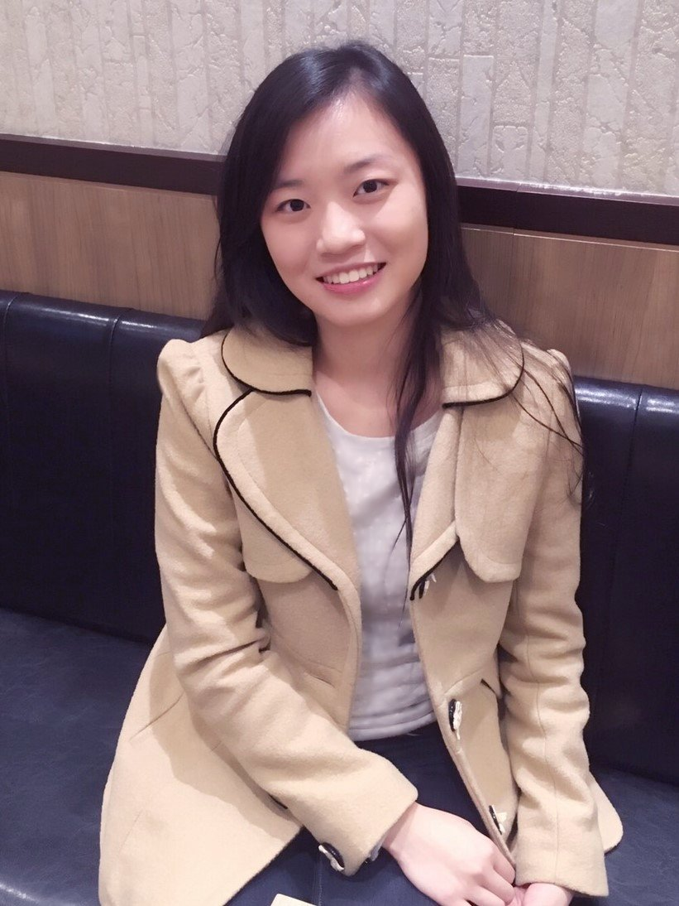

班級學號: 資科二甲 A105222006
介紹:
目前就讀於世新大學資訊管理學系資訊科技組二年級， 興趣廣度極大以致難以明確列舉，大致有音樂、繪畫、 文學...等，喜歡許多文學家的作品，例如:珍.奧斯汀 的傲慢與偏見、曹雪芹的紅樓夢、史蒂芬.金的四季奇譚 ，理想中的工作是AI開發工程師。
喜歡的犬種: 德國狼犬

|
|

|
姓名: 林媛宣 班級學號: 資科二甲 A105222006 介紹: 目前就讀於世新大學資訊管理學系資訊科技組二年級， 興趣廣度極大以致難以明確列舉，大致有音樂、繪畫、 文學...等，喜歡許多文學家的作品，例如:珍.奧斯汀 的傲慢與偏見、曹雪芹的紅樓夢、史蒂芬.金的四季奇譚 ，理想中的工作是AI開發工程師。 喜歡的犬種: 德國狼犬
|